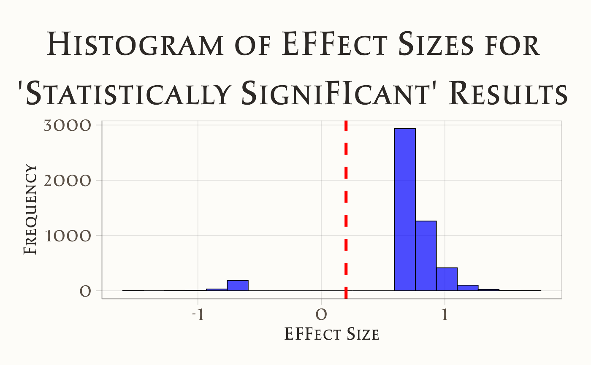

here::here("code", "_common.R") |>
source()
# Load packages
if (!requireNamespace("pacman")) install.packages("pacman")
pacman::p_load(tidyr)52 Errori di segno e errori di grandezza
52.1 Introduzione
In questo capitolo analizzeremo la relazione tra la crisi della replicabilità e le procedure decisionali statistiche proprie dell’approccio frequentista. In particolare, approfondiremo gli errori di tipo M (magnitude) e di tipo S (sign), discussi da Loken & Gelman (2017), e il loro impatto sulla validità dei risultati scientifici.
52.2 Il Filtro della Significatività Statistica
Nel ?sec-crisis abbiamo esplorato come la pratica scientifica contemporanea sia spesso compromessa da casi di frode, principalmente a causa delle significative implicazioni economiche legate alla pubblicazione su riviste scientifiche di alto prestigio. Questo fenomeno è spesso sottovalutato, poiché le riviste tendono a essere riluttanti nel riconoscere la necessità di correzioni o ritrattazioni degli articoli già pubblicati.
La frode scientifica rappresenta una minaccia evidente alla riproducibilità dei risultati, un pilastro fondamentale del metodo scientifico. Tuttavia, le difficoltà nel replicare i risultati pubblicati non sono attribuibili esclusivamente a frodi o a “pratiche di ricerca disoneste” (Nelson et al., 2018). Un problema intrinseco risiede nel metodo statistico ampiamente adottato dai ricercatori: l’approccio del test di ipotesi nulla e della significatività statistica di stampo fisheriano. Secondo questo metodo, i risultati che non raggiungono la soglia di “significatività statistica” vengono scartati, mentre quelli che la superano sono considerati credibili, basandosi esclusivamente su questo criterio (Wagenmakers et al., 2008).
Tuttavia, l’idea che la significatività statistica sia un filtro affidabile per distinguere i risultati di ricerca “validi” da quelli “non validi” è fondamentalmente errata. Numerose evidenze dimostrano i limiti di questo approccio. Per approfondire questa problematica, esamineremo lo studio di Loken & Gelman (2017), che mette in luce la relazione tra la crisi della replicabilità e le procedure decisionali statistiche dell’approccio frequentista.
Uno dei principali problemi evidenziati da Loken & Gelman (2017) è che, in contesti di ricerca complessi, la significatività statistica fornisce prove molto deboli riguardo al segno (sign) o all’entità (magnitude) degli effetti sottostanti. In altre parole, il raggiungimento della significatività statistica non garantisce né la rilevanza né la consistenza dei risultati ottenuti. Questo solleva seri dubbi sull’affidabilità di tale criterio come unico strumento per valutare la validità delle scoperte scientifiche.
52.3 Errori di tipo M e S
Per illustrare le implicazioni del processo decisionale basato sulla significatività statistica, Loken & Gelman (2017) hanno condotto una simulazione. In questa simulazione, hanno considerato uno scenario di ricerca ipotetico in cui era presente un effetto reale, sebbene molto debole, difficilmente rilevabile senza un ampio volume di dati. Utilizzando l’approccio frequentista, hanno cercato di identificare questo effetto valutando la significatività statistica.
I risultati della simulazione hanno mostrato che, anche in presenza di un effetto reale (seppur debole), l’approccio frequentista riusciva a rilevare un effetto statisticamente significativo solo in una piccola percentuale dei casi. Inoltre, quando un effetto significativo veniva individuato, la stima della sua grandezza risultava altamente imprecisa e instabile.
In sintesi, la significatività statistica fornisce un’indicazione generica sulla presenza o assenza di un effetto, ma non offre informazioni affidabili sulla sua entità o replicabilità. Questo problema è particolarmente rilevante in campi come la psicologia e le scienze sociali, dove gli studi spesso si basano su campioni di dimensioni ridotte e gli effetti osservati tendono a essere modesti. In tali contesti, l’approccio frequentista rischia di produrre prove deboli e instabili, compromettendo la replicabilità e l’affidabilità dei risultati.
52.3.1 Simulazione semplificata
Riproduciamo qui, in forma semplificata, la simulazione condotta da Loken & Gelman (2017). Iniziamo importando le librerie necessarie.
Consideriamo due campioni casuali indipendenti di dimensioni \(n_1 = 20\) e \(n_2 = 25\), estratti rispettivamente dalle distribuzioni normali \(\mathcal{N}(102, 10)\) e \(\mathcal{N}(100, 10)\). La dimensione effettiva dell’effetto (\(d\)) per la differenza tra le medie dei due campioni è calcolata utilizzando la formula:
\[ d = \frac{\bar{y}_1 - \bar{y}_2}{s_p}, \]
dove \(\bar{y}_1\) e \(\bar{y}_2\) rappresentano le medie campionarie dei due gruppi, e \(s_p\) è la deviazione standard combinata, definita come:
\[ s_p = \sqrt{\frac{(n_1-1)s_1^2 + (n_2-1)s_2^2}{n_1 + n_2 - 2}}. \]
In questo caso specifico, la dimensione effettiva dell’effetto risulta molto piccola, indicando che la differenza osservata tra le medie dei due gruppi non ha una rilevanza pratica significativa. Ciò suggerisce che la distinzione tra i due gruppi, seppur statisticamente rilevabile, non ha un impatto sostanziale in contesti reali.
# Parametri
mu_1 <- 102 # Media del primo gruppo
mu_2 <- 100 # Media del secondo gruppo
sigma <- 10 # Deviazione standard comune
n1 <- 20 # Numero di osservazioni nel primo gruppo
n2 <- 25 # Numero di osservazioni nel secondo gruppo
# Calcolo della differenza media
mean_difference <- abs(mu_1 - mu_2)
# Calcolo della deviazione standard pooled
pooled_sd <- sqrt(((n1 - 1) * sigma^2 + (n2 - 1) * sigma^2) / (n1 + n2 - 2))
# Calcolo di Cohen's d
cohen_d <- mean_difference / pooled_sd
# Output del risultato
cat("Dimensione dell'effetto (Cohen's d):", cohen_d, "\n")
#> Dimensione dell'effetto (Cohen's d): 0.2Esaminiamo ora le conclusioni che emergerebbero applicando l’approccio frequentista e la sua procedura di decisione statistica in questo contesto. Supponiamo di condurre una simulazione in cui vengono estratti due campioni: il primo composto da 20 osservazioni provenienti dalla prima popolazione e il secondo da 25 osservazioni provenienti dalla seconda popolazione. Successivamente, applichiamo il test \(t\) di Student per confrontare le medie dei due gruppi.
Nell’ambito dell’approccio frequentista, il valore-\(p\) ottenuto dal test determina la decisione statistica. Se il valore-\(p\) è superiore a 0.05, i risultati vengono considerati non significativi e, di conseguenza, scartati. Al contrario, se il valore-\(p\) è inferiore a 0.05, il risultato è ritenuto “pubblicabile” e si conclude che esiste una differenza statisticamente significativa tra i due gruppi.
Per valutare in modo approfondito le conclusioni derivate da questa procedura, è necessario ripetere l’intero processo per un numero elevato di iterazioni, ad esempio 50.000 volte. Ciò significa che, in ciascuna iterazione, vengono estratti nuovi campioni, viene calcolato il test \(t\) di Student e viene determinato il corrispondente valore-\(p\). Ripetendo questo processo su larga scala, è possibile ottenere una distribuzione completa dei risultati, che consente di analizzare la frequenza con cui si ottengono risultati significativi e la stabilità delle stime prodotte dall’approccio frequentista in questo contesto.
# Parametri
n_samples <- 50000
mu_1 <- 102
mu_2 <- 100
sigma <- 10
n1 <- 20
n2 <- 25
# Inizializzazione del risultato
res <- c()
# Simulazioni
set.seed(123) # Per la riproducibilità
for (i in 1:n_samples) {
# Generazione dei campioni casuali
y1 <- rnorm(n1, mean = mu_1, sd = sigma)
y2 <- rnorm(n2, mean = mu_2, sd = sigma)
# Calcolo della dimensione dell'effetto
y1bar <- mean(y1)
y2bar <- mean(y2)
v1 <- var(y1)
v2 <- var(y2)
s <- sqrt(((n1 - 1) * v1 + (n2 - 1) * v2) / (n1 + n2 - 2))
efsize <- (y1bar - y2bar) / s
# Calcolo del valore p
t_test <- t.test(y1, y2, var.equal = TRUE)
# Salvataggio della dimensione dell'effetto solo per risultati "statisticamente significativi"
if (t_test$p.value < 0.05) {
res <- c(res, efsize)
}
}res_df <- data.frame(effect_size = res)
ggplot(res_df, aes(x = effect_size)) +
geom_histogram(bins = 20, fill = "blue", color = "black", alpha = 0.7) +
geom_vline(
xintercept = 0.2, color = "red", linetype = "dashed",
size = 1.2, label = "True Effect Size") +
labs(
x = "Effect Size",
y = "Frequency",
title = "Histogram of Effect Sizes for\n'Statistically Significant' Results"
) 
Come evidenziato da Loken & Gelman (2017), l’applicazione dell’approccio frequentista nella procedura di decisione statistica può condurre a due tipi di errori rilevanti. Il primo, noto come errore di magnitude (grandezza), si manifesta quando i risultati pubblicati tendono a sovrastimare la reale entità dell’effetto. Nella simulazione condotta, nonostante la vera grandezza dell’effetto fosse modesta (0.2), la media della grandezza dell’effetto per i risultati classificati come “statisticamente significativi” era circa 0.8, suggerendo un effetto di entità “ampia”. Questo indica una distorsione sistematica verso stime esagerate.
Il secondo errore, chiamato errore di segno, si verifica quando, a causa della variabilità campionaria, la direzione dell’effetto viene stimata in modo errato. In tali casi, il ricercatore potrebbe erroneamente concludere che \(\mu_2 > \mu_1\), quando in realtà non è così. È importante sottolineare che, anche in queste situazioni, la grandezza assoluta dell’effetto risulta sovrastimata.
Un aspetto degno di nota è che queste conclusioni rimarrebbero valide anche se si considerasse l’intervallo di confidenza per la differenza tra le medie. In sintesi, l’approccio frequentista introduce un errore sistematico nella stima della grandezza dell’effetto, che rappresenta la quantità più rilevante per il ricercatore. In alcuni casi, può persino portare a errori nella determinazione della direzione dell’effetto, compromettendo ulteriormente l’affidabilità delle conclusioni scientifiche.
52.4 Riflessioni Conclusive
In conclusione, l’approccio frequentista non rappresenta un metodo affidabile per valutare i risultati della ricerca e determinarne l’attendibilità o la necessità di scartarli (Gelman & Carlin, 2014; Loken & Gelman, 2017). Questa mancanza di affidabilità è dovuta all’introduzione di errori sistematici nella stima della grandezza degli effetti, che in alcuni casi possono persino portare a errori nella direzione dell’effetto stesso. Alla luce di queste criticità, non sembrano esserci motivi validi per continuare a fare affidamento su questo approccio.
Al contrario, l’adozione dell’approccio bayesiano sembra offrire una soluzione più precisa e affidabile per l’analisi dei dati di ricerca. Questo metodo valuta la probabilità delle ipotesi alla luce dei dati osservati, evitando gli errori intrinseci dell’approccio frequentista e fornendo una base più solida per prendere decisioni informate sulla validità dei risultati. In questo modo, l’approccio bayesiano si presenta come un’alternativa più robusta e scientificamente rigorosa.
Esercizi
Informazioni sull’Ambiente di Sviluppo
sessionInfo()
#> R version 4.5.1 (2025-06-13)
#> Platform: aarch64-apple-darwin20
#> Running under: macOS Sequoia 15.6.1
#>
#> Matrix products: default
#> BLAS: /Library/Frameworks/R.framework/Versions/4.5-arm64/Resources/lib/libRblas.0.dylib
#> LAPACK: /Library/Frameworks/R.framework/Versions/4.5-arm64/Resources/lib/libRlapack.dylib; LAPACK version 3.12.1
#>
#> locale:
#> [1] C/UTF-8/C/C/C/C
#>
#> time zone: Europe/Rome
#> tzcode source: internal
#>
#> attached base packages:
#> [1] stats graphics grDevices utils datasets methods base
#>
#> other attached packages:
#> [1] pillar_1.11.0 tinytable_0.13.0 patchwork_1.3.2
#> [4] ggdist_3.3.3 tidybayes_3.0.7 bayesplot_1.14.0
#> [7] ggplot2_3.5.2 reliabilitydiag_0.2.1 priorsense_1.1.1
#> [10] posterior_1.6.1 loo_2.8.0 rstan_2.32.7
#> [13] StanHeaders_2.32.10 brms_2.22.0 Rcpp_1.1.0
#> [16] sessioninfo_1.2.3 conflicted_1.2.0 janitor_2.2.1
#> [19] matrixStats_1.5.0 modelr_0.1.11 tibble_3.3.0
#> [22] dplyr_1.1.4 tidyr_1.3.1 rio_1.2.3
#> [25] here_1.0.1
#>
#> loaded via a namespace (and not attached):
#> [1] svUnit_1.0.8 tidyselect_1.2.1 farver_2.1.2
#> [4] fastmap_1.2.0 TH.data_1.1-4 tensorA_0.36.2.1
#> [7] pacman_0.5.1 digest_0.6.37 timechange_0.3.0
#> [10] estimability_1.5.1 lifecycle_1.0.4 survival_3.8-3
#> [13] magrittr_2.0.3 compiler_4.5.1 rlang_1.1.6
#> [16] tools_4.5.1 yaml_2.3.10 knitr_1.50
#> [19] labeling_0.4.3 bridgesampling_1.1-2 htmlwidgets_1.6.4
#> [22] curl_7.0.0 pkgbuild_1.4.8 RColorBrewer_1.1-3
#> [25] abind_1.4-8 multcomp_1.4-28 withr_3.0.2
#> [28] purrr_1.1.0 grid_4.5.1 stats4_4.5.1
#> [31] colorspace_2.1-1 xtable_1.8-4 inline_0.3.21
#> [34] emmeans_1.11.2-8 scales_1.4.0 MASS_7.3-65
#> [37] cli_3.6.5 mvtnorm_1.3-3 rmarkdown_2.29
#> [40] ragg_1.5.0 generics_0.1.4 RcppParallel_5.1.11-1
#> [43] cachem_1.1.0 stringr_1.5.1 splines_4.5.1
#> [46] parallel_4.5.1 vctrs_0.6.5 V8_7.0.0
#> [49] Matrix_1.7-4 sandwich_3.1-1 jsonlite_2.0.0
#> [52] arrayhelpers_1.1-0 systemfonts_1.2.3 glue_1.8.0
#> [55] codetools_0.2-20 distributional_0.5.0 lubridate_1.9.4
#> [58] stringi_1.8.7 gtable_0.3.6 QuickJSR_1.8.0
#> [61] htmltools_0.5.8.1 Brobdingnag_1.2-9 R6_2.6.1
#> [64] textshaping_1.0.3 rprojroot_2.1.1 evaluate_1.0.5
#> [67] lattice_0.22-7 backports_1.5.0 memoise_2.0.1
#> [70] broom_1.0.9 snakecase_0.11.1 rstantools_2.5.0
#> [73] coda_0.19-4.1 gridExtra_2.3 nlme_3.1-168
#> [76] checkmate_2.3.3 xfun_0.53 zoo_1.8-14
#> [79] pkgconfig_2.0.3Bibliografia
Gelman, A., & Carlin, J. (2014). Beyond Power Calculations: Assessing Type S (Sign) and Type M (Magnitude) Errors. Perspectives on Psychological Science, 9(6), 641–651.
Loken, E., & Gelman, A. (2017). Measurement Error and the Replication Crisis. Science, 355(6325), 584–585.
McElreath, R. (2020). Statistical rethinking: A Bayesian course with examples in R and Stan (2nd Edition). CRC Press.
Nelson, L. D., Simmons, J., & Simonsohn, U. (2018). Psychology’s renaissance. Annual review of psychology, 69(1), 511–534.
Wagenmakers, E.-J., Lee, M., Lodewyckx, T., & Iverson, G. J. (2008). Bayesian versus frequentist inference. Bayesian evaluation of informative hypotheses, 181–207.